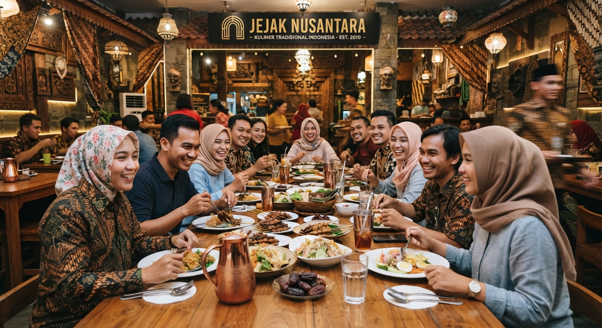

Contoh berita · 20 Maret 2026
Acara Buka Puasa Bersama Pelanggan
Merayakan kebersamaan melalui acara buka puasa yang hangat bersama pelanggan dan warga sekitar.
Baca beritaIkuti cerita, pencapaian, dan informasi terbaru dari Jejak Rasa Nusantara.

PencapaianContoh berita · 20 Maret 2026
Jejak Rasa Nusantara mengadakan acara buka puasa bersama sebagai bentuk apresiasi kepada pelanggan dan komunitas. Momen ini menjadi kesempatan untuk berbagi hidangan, cerita, dan kebersamaan.
Baca selengkapnyaContoh berita · 20 Maret 2026
Merayakan kebersamaan melalui acara buka puasa yang hangat bersama pelanggan dan warga sekitar.
Baca berita Pengumuman
Pengumuman
Contoh pengumuman · 10 April 2026
Toko akan tutup sementara pada tanggal yang telah ditentukan. Kami akan kembali melayani pelanggan setelah itu.
Baca pengumuman Kegiatan
Kegiatan
Contoh berita · 5 Mei 2026
Kami melakukan renovasi dan penataan ulang area toko agar suasana bersantap menjadi lebih nyaman.
Baca beritaKepada pelanggan Jejak Rasa Nusantara, kami informasikan bahwa toko akan tutup sementara pada [tanggal penutupan] karena [alasan penutupan]. Kami berencana kembali beroperasi pada [tanggal buka kembali]. Terima kasih atas pengertian Anda.
Jejak Rasa Nusantara sedang melakukan renovasi pada [bagian toko] mulai [tanggal]. Pembaruan ini dilakukan agar pelanggan dapat menikmati hidangan dengan suasana yang lebih nyaman. Informasi operasional selama renovasi: [jam operasional atau keterangan layanan].